Os textos devem ser digitados em cor preta, podendo utilizar outras cores somente para as ilustrações.
Impresso em papel branco, no formato A4 (21cm×29,7cm).
Os elementos pré-textuais devem iniciar no anverso da
folha, com exceção dos dados internacionais de catalogação-na-publicação que devem vir no verso da folha de rosto.
Recomenda-se que os elementos textuais e elementos pós-textuais sejam digitados no anverso das folhas.
Margens
A folha A4 não pode ser usada completamente (por conta de impressões, etc), por isso usamos Margens com os seguintes valores:
- ( ↑ ) Superior.. : 3 cm;
- (→) Direita_/. : 2 cm
- ( ↓ ) Inferior./. : 2 cm
- (←) Esquerda : 3 cm
Exemplo:
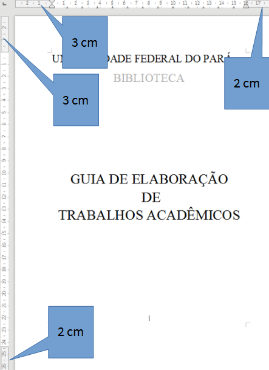
Tipo e Tamanho de Fontes
- Recomenda-se a fonte Time New Roman ou Arial, tamanho 12, para todo o trabalho, inclusive capa;
- Alinhamento justificado, para todo o corpo do
trabalho;
- ATENÇÂO: Referências Bibliográficas -> alinhamento à esquerda;
- Devem ser em tamanho menor que a do texto corrido e uniforme:
- Citações com mais de três linhas;
- notas de rodapé;
- paginação;
- legendas;
- fontes das tabelas;
- fontes das ilustrações;
Espaço Entre Linhas
- Texto Corrido: espaço 1,5;
- Citação com mais de 3 linhas: espaço simples;
- Resumo: espaço simples;
- Notas de rodapé: espaço simples;
- Referências Bibliográficas: espaço simples e separadas entre si por um espaço simples em branco;
- Legendas de ilustrações e tabelas: espaço simples.
Numeração Progressiva
Conceito
São números ou grupo de números que antecede cada seção do documento (indicativo de seção) e que facilita a localização dentro do mesmo. As seções primárias são as principais divisões e as secundárias, terciárias, quaternárias e quinárias as subdivisões. Deve-se limitar até a seção quinária, Conforme exemplo:
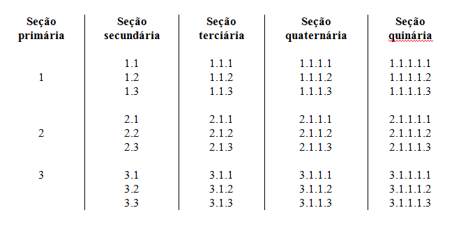
Estrutura
O indicativo em algarismo arábico deve ser separado do título da seção/subseção por um espaço de caractere (não inserir ponto, hífen, travessão ou qualquer sinal); seguido do título de cada seção/subseção.
Exemplo:
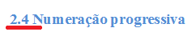
Alínea e Subalínea
Conceito
Quando for necessário enumerar os diversos assuntos de uma seção que não possua título, esta deve ser subdividida em alíneas.
A disposição gráfica das alíneas obedece às seguintes regras:
- o trecho final do texto correspondente, anterior às alíneas, termina em dois pontos;
- as alíneas são ordenadas alfabeticamente;
- as letras indicativas das alíneas são reentradas em relação à margem esquerda;
- o texto da alínea começa por letra minúscula e termina em ponto-e-vírgula, exceto a última que termina em ponto;
Quando a exposição da idéia assim o exigir, a alínea pode ser subdividida em subalíneas. As subalíneas devem:
- Começar por um hífen, colocado sob a primeira letra do texto da alínea correspondente, dele separadas por um espaço.
Exemplo:
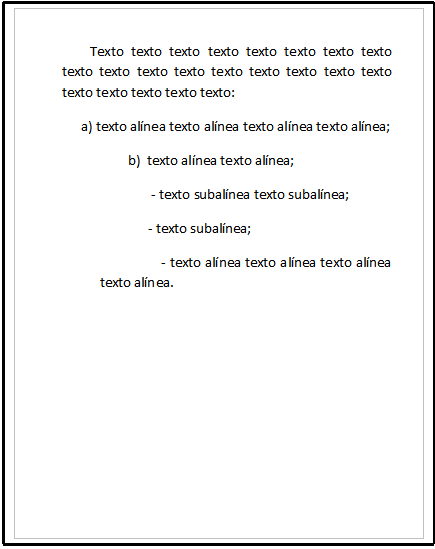
Paginação
Conceito
Todas as folhas a partir da folha de rosto, devem ser contadas sequencialmente (exceto a errata!), mas não numeradas. A numeração deve figurar, a partir da primeira folha da parte textual, em algarismos arábicos, no canto superior direito da folha, a 2 cm da borda superior, ficando o último algarismo a 2 cm da borda direita da folha.
Exemplo:
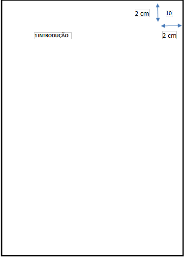
Pequeno resumo
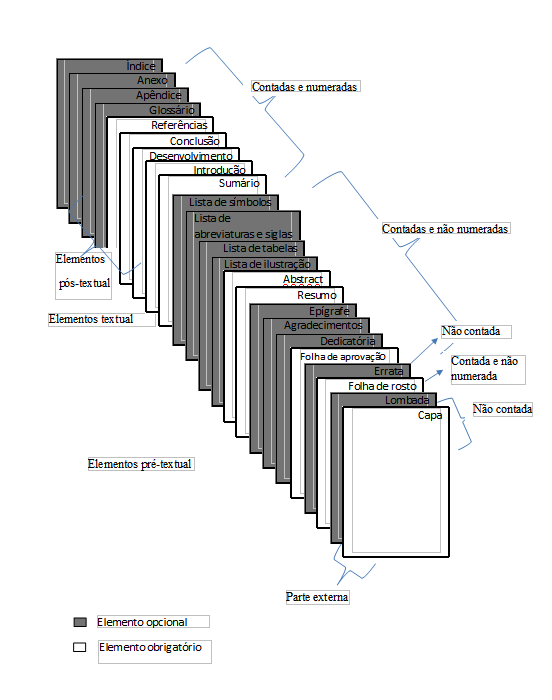
Equações
Conceito
Para facilitar a leitura, devem ser destacadas no texto e, se necessário, numeradas com algarismos arábicos entre parênteses, alinhados à direita. Na sequência normal do texto, é permitido o uso de uma entrelinha maior que comporte seus elementos (expoentes, índices, entre outros).
Exemplo:

Ilustrações
Conceito
Qualquer que seja o tipo de ilustração, sua identificação aparece na parte superior, precedida da palavra designativa (desenho, esquema, fluxograma, fotografia, gráfico, mapa, organograma, planta, quadro, retrato, figura, imagem, entre outros), seguida de seu número de ordem de ocorrência no texto para cada designação diferente, em algarismos arábicos, travessão e do respectivo título. Após a ilustração, na parte inferior, indicar a fonte consultada (elemento obrigatório, mesmo que seja produção do próprio autor), legenda, notas e outras informações necessárias à sua compreensão (se houver). A ilustração deve ser citada no texto e inserida o mais próximo possível do trecho a que se refere.
Exemplo:

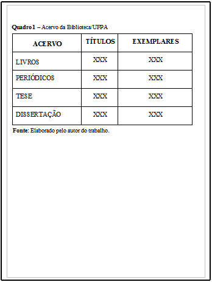
Tabelas
Conceito
São formas não discursiva de apresentar informações, das quais o dado numérico se destaca como informação central.
Devem ser citadas no texto, inseridas o mais próximo possível do trecho a que se referem e padronizadas conforme o Instituto Brasileiro de Geografia e Estatística (IBGE):
- Número de identificação da tabela e título;
- Laterais esquerda e direita da tabela devem ser abertas;
- Partes superior e inferior da tabela devem ser fechadas;
- Não se utilizam traços horizontais ou verticais para separar números;
- Utiliza-se uma linha horizontal para separar o espaço do cabeçalho;
- No rodapé da tabela deverá conter a fonte, notas gerais e específicas;
- Se a tabela não couber em uma mesma folha, sua continuação deve ser inserida na folha seguinte, sem que seja delimitado por traço horizontal na parte inferior, sendo o título e o cabeçalho repetidos nesta folha.
Exemplo:
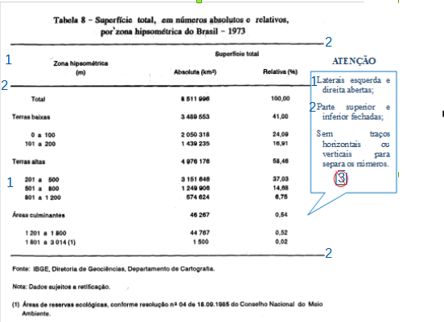
Mas... se não couber na mesma folha?
Assim, amiguinho:
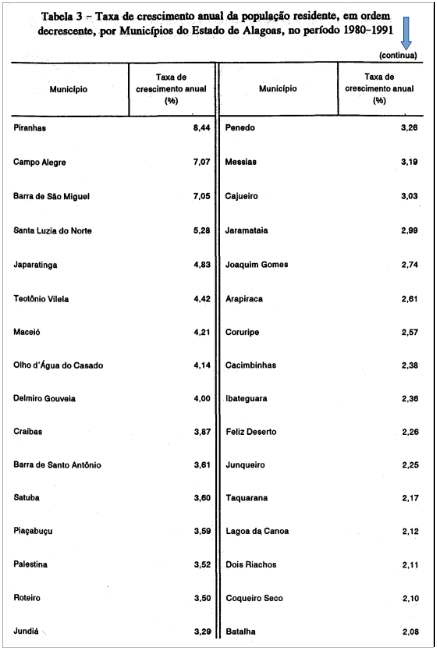

Citações
Conceito
Citação é a menção de uma informação extraída de outra fonte, e que podem aparecer no texto ou em notas de rodapé. Contendo:
- Sobrenome do autor(s);
- Data;
- Nº da página (no caso de citação direta).
Citação Direta
É a transcrição exata de parte da obra do autor consultado:
- Citação direta com até 3 (três) linhas: entre aspas dupla (aspas simples apenas para indicação de citação dentro da citação).
Exemplo:
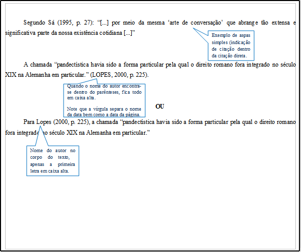
- Citação direta com mais de 3 (três) linhas: destacadas com:
- recuo de 4cm da margem esquerda;
- fonte 10;
- alinhamento justificado;
- espaçamento simples;
- e sem as aspas.
Exemplo:
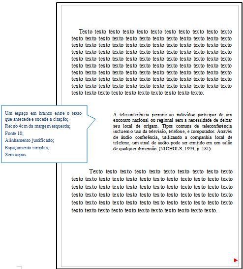
Citação Indireta
Texto baseado na obra do autor consultado. Nas citações indiretas é opcional a indicação da página consultada.
Exemplo:
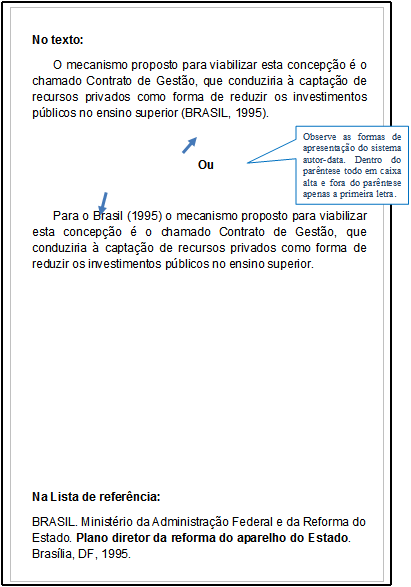
Citação de Citação
Citação direta ou indireta de um texto em que não se teve acesso ao original. Deve-se citar o sobrenome do autor da ideia original, seguido da expressão “apud”. Nas referências bibliográficas, deve-se inserir apenas a obra realmente consultada.
Exemplo:
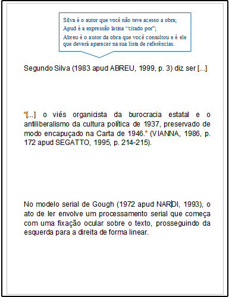
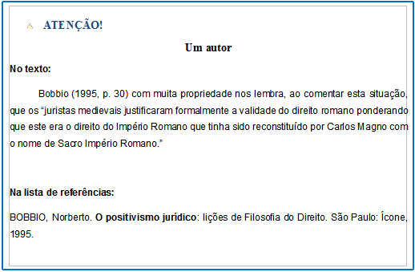
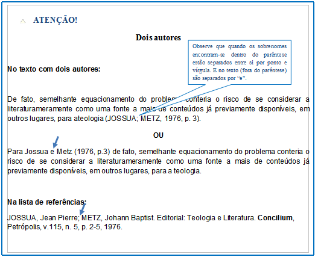
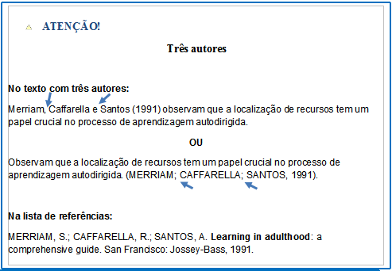
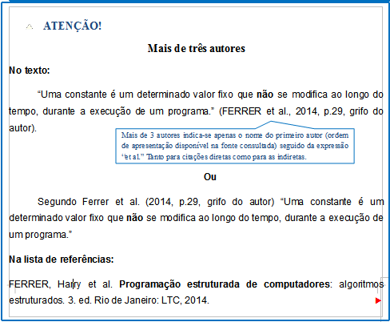
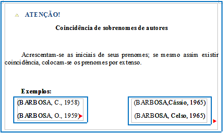
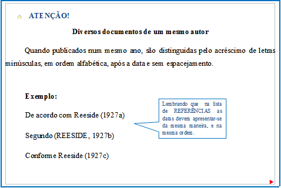
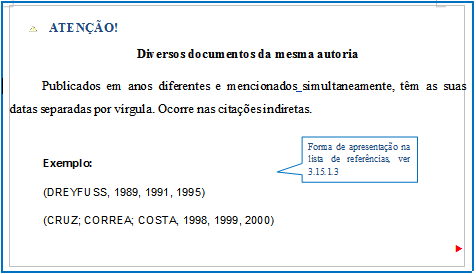
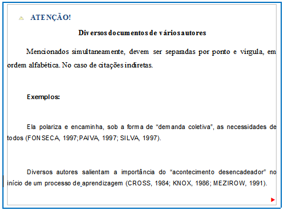
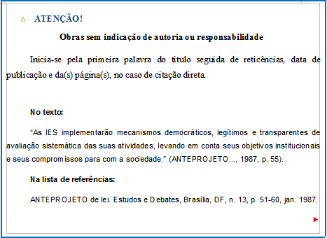
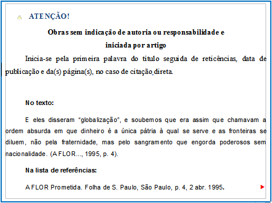
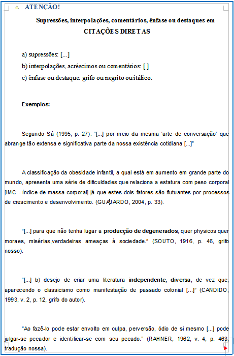
Notas de Rodapé
Conceito
Podem ser de dois tipos: nota explicativa ou nota de referência, e devem ser alinhadas, a partir da segunda linha da mesma nota, abaixo da primeira letra da primeira palavra, de forma a destacar o expoente e sem espaço entre elas e com fonte menor que a do texto.
Recomenda-se não usar os dois tipos de notas de rodapé no mesmo trabalho.
Notas Explicativas
São notas usadas para comentários, esclarecimentos ou explanações, que não possam ser incluídos no texto. A numeração das notas é feita por algarismos arábicos, devendo ter numeração única e consecutiva, Não se inicia a numeração a cada página.
Exemplo:
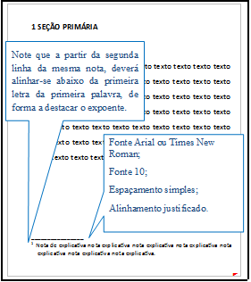
Notas de referência
A numeração das notas de referência é feita por algarismos arábicos, devendo ter numeração única e consecutiva para cada capítulo ou parte. Não se inicia a numeração a cada página.
Primeira Citação
A primeira citação de uma obra, em nota de rodapé, deve ter sua referência completa.
Exemplo:
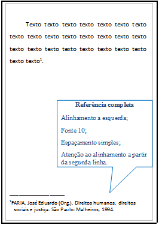
Citações Subsequentes:
As subsequentes citações da mesma obra e na mesma página podem ser referenciadas de forma abreviada (expressões latinas), utilizando as seguintes expressões, abreviadas quando for o caso:
- Idem - mesmo autor - id.
Exemplo:
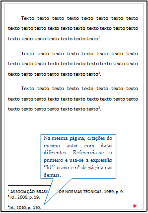
- Ibidem - na mesma obra - ibid.
Exemplo:
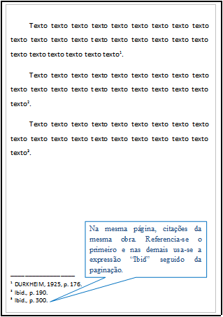
- Opus citatum, opere citato – obra citada – op. cit.
Exemplo:
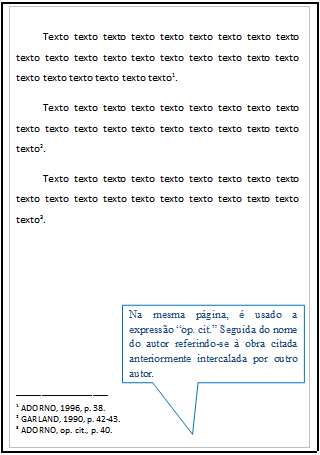
- Passim – aqui e ali, em diversas passagens – passim
Exemplo:
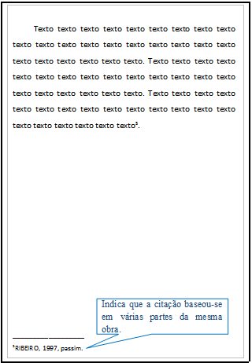
- Loco citato – no lugar citado – loc. cit.
Exemplo:
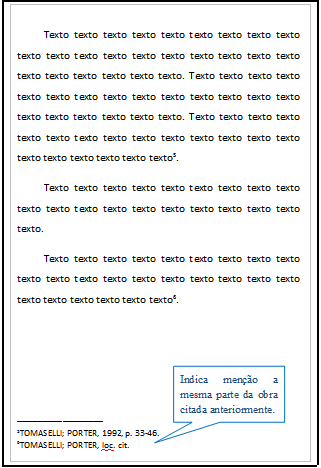
- Confira, confronte – Cf.
Exemplo:
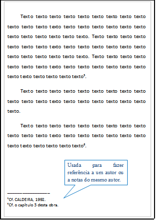
- Seguinte ou que se segue – et seq.
Exemplo:
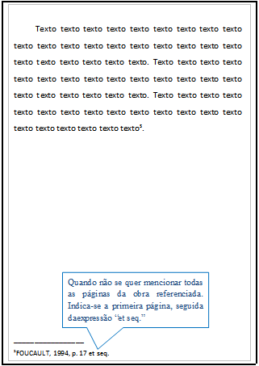
Referências
Conceito
As referências são alinhadas somente à margem esquerda do texto e de forma a identificar-se individualmente cada documento em ordem alfabética, em espaço simples e separadas entre si por espaço simples.
A palavra REFERÊNCIAS deve ser em:
- caixa alta;
- negrito;
- centralizado;
Exemplo:

Monografia
Inclui livro e/ou folheto (manual, guia, catálogo, enciclopédia, dicionário etc.).
Os elementos essenciais são:
- autor(es);
- título;
- edição;
- local;
- editora;
- data de publicação.
Quando necessário, acrescentam-se elementos complementares à referência para melhor identificar o documento.
Exemplo:

Casos:


Publicação Periódica
Inclui a coleção como um todo, fascículo ou número de revista, número de jornal, caderno etc. na íntegra, e a matéria existente em um número, volume ou fascículo de periódico (artigos científicos de revistas, editoriais, matérias jornalísticas, seções, reportagens etc.).
Publicação periódica como um todo


Artigos de publicação periódica


Artigos de publicação periódica em meio eletrônico

Trabalhos apresentados em Congresso, Simpósio, Conferência e outros eventos


Tese, dissertação e trabalho de conclusão de curso


Documento Jurídico


Imagem em movimento
Inclui filmes, videocassete, DVD, entre outros.


Documento iconográfico
Inclui:
- pintura;
- gravura;
- ilustração;
- fotografia;
- desenho técnico;
- diapositivo;
- diafilme;
- material estereográfico;
- transparência;
- cartaz;
- entre outros.


Quando necessário, podem-se acrescentar elementos complementares para melhor identificar o documento.
Exemplos:
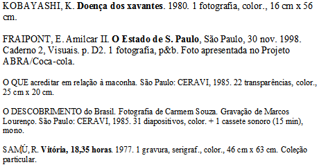
Documento cartográfico
Inclui:
- atlas;
- mata;
- globo;
- fotografia aérea;
- entre outros.
As referências devem obedecer aos padrões indicados para outros tipos de documentos, quando necessário.


Obras consultadas em meio eletrônico
As informações devem obedecer aos padrões indicados para os documentos, acrescido das informações relativas à descrição física do meio eletrônico.
Monografia no todo

Parte de monografia
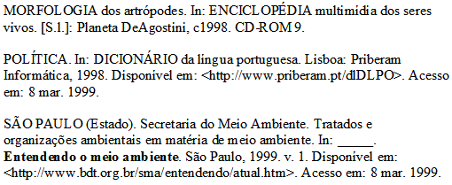
Artigo de publicação periódica
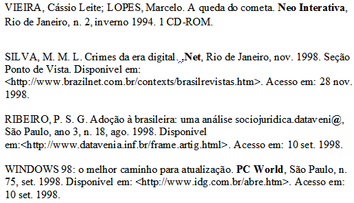
Artigo e/ou matéria de jornal
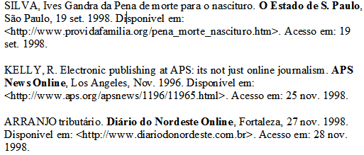
Eventos (Congresso, simpósio, entre outros)
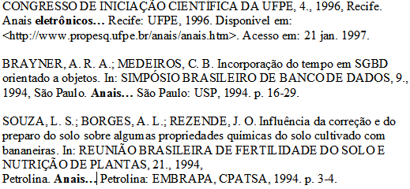
Documento jurídico
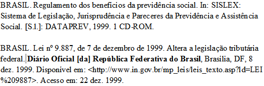
Documento iconográfico
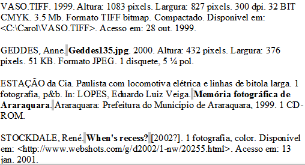
Documento cartográfico
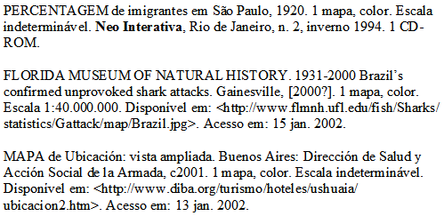
Documento de exclusivo em meio eletrônico
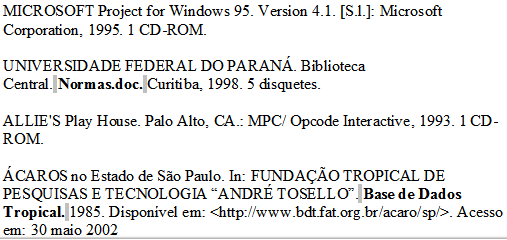
Patentes
Os elementos essenciais são: entidade responsável e/ou autor, título, número da patente e datas (do período de registro).
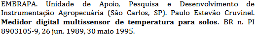
Casos Especiais
Sobrenomes que indicam grau de parentesco
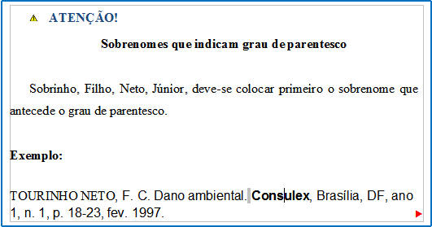
Nomes de autores de várias obras referenciadas sucessivamente
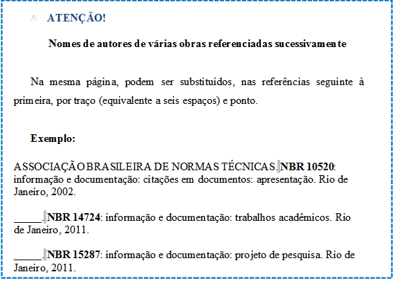
Fontes de mesmo autor e
com mesmo ano de publicação
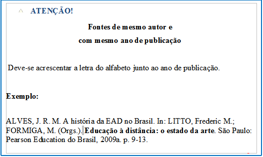
Fontes de mesmo autor e com ano de publicação diferente
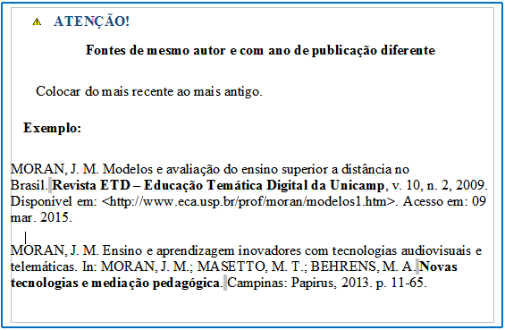
Fontes sem local
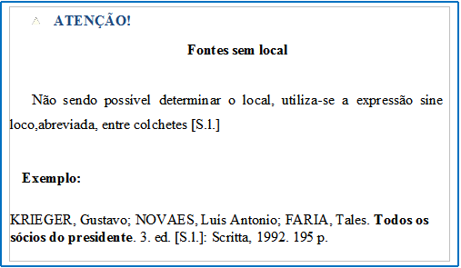
Fontes sem editora
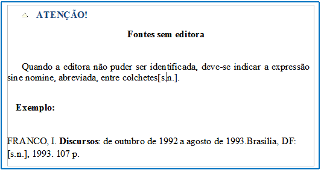
Fontes sem local e editora
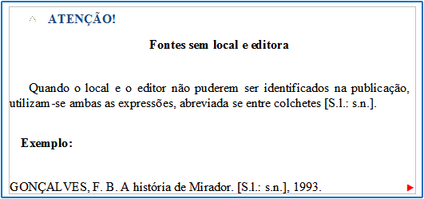
Fontes sem data
Continuar